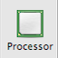

|
Q: These days, all Macintosh computers have multiple processor cores. I'd like to temporarily turn off some of the cores to test how my Mac OS X product behaves when fewer cores are available. How can I do that?A: You have a couple of options for changing the number of active processor cores. The first option takes effect immediately and provides a convenient user interface. The second method requires a reboot but its effect is persistent until changed. Setting the Number of Active Cores GraphicallyThe simplest way to change the number of active processor cores is to use the Processor preference pane that is part of the CHUD (Computer Hardware Understanding Developer) tools. CHUD is normally installed as part of installing Xcode. The Processor preference pane is located in Figure 1: Processor preference pane icon.  Once the preference pane has been installed, you can use it to set the maximum number of processor cores available to the system and to start or stop any particular core on the fly. Note: Processor cores which have been disabled using CHUD will be enabled again after sleep/wake or system restart. Figure 2: Processor preference pane window. Click "Show control in menu bar" to install a shortcut to Processor functions in the menu bar. Figure 3: Processor menu. Select "Show Processor Palette" from the Processor menu to display a graphical representation of the available processors and their activity levels. Figure 4: Processor palette. Click the plus or minus buttons at the lower right to start or stop cores sequentially, or click the picture of each processor to stop or start that particular core. Click the toolbar button at the upper right to show and hide the controls for customizing the processor palette. Figure 5: Controls for customizing the processor palette. Setting the Number of Active Cores from the Command LineThe number of active cores can also be set from the command line using the Firmware variables are written to non-volatile memory (NVRAM) when the system is shut down or restarted. The kernel only reads Follow these steps to set the number of active processor cores from the command line:
If you decide to change the setting before restarting, just run Clearing the cpus Boot ArgumentThe
Document Revision History
Posted: 2008-09-16 |
|